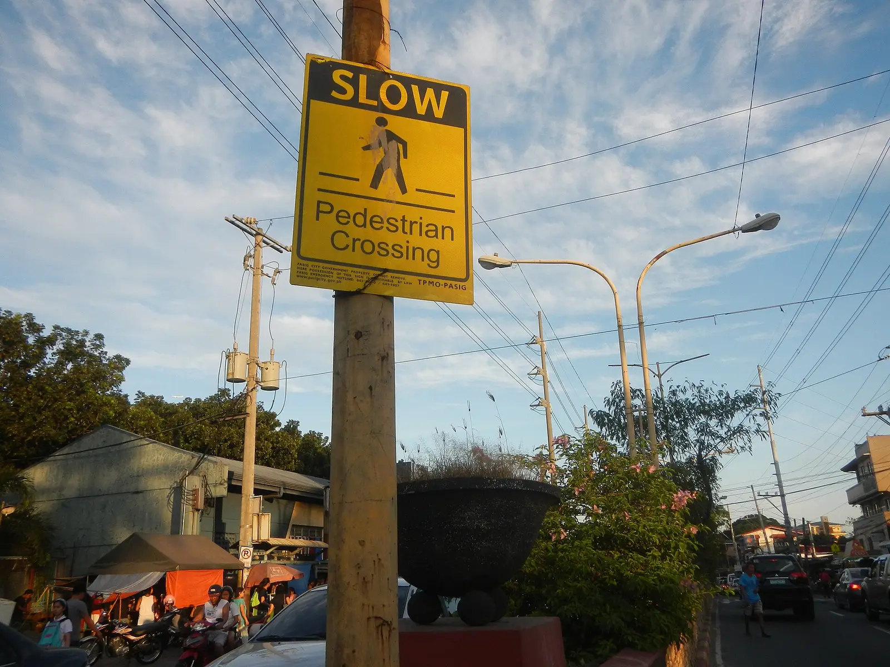

Definition
On this site, English URLs live at the root and Chinese URLs live under /zh/. Both can be listed. Each entry should be the canonical URL, not a parameter copy, a redirect, or a thin shell. Alternates can be expressed with the sitemap as well as with on-page hreflang. The on-page tags still have to agree. x-default points at English. An /en/ prefix is not part of this setup.
Short answer
A multilingual XML sitemap lists the canonical URLs you want found, including each language you have actually published. It can help a crawler discover those URLs. It does not write the translation, fix hreflang, or guarantee indexation.

Fields that must say the same thing
Add a URL after a fetch returns its title and primary text. Include the language alternate you really serve. If the Chinese page is still a copied headline, do not use the sitemap to pretend the market is covered. Question coverage remains unanswered until the page answers it.
The issue on the page
A sitemap is a coverage and freshness list. It is a poor place to hide orphan pages: those URLs also need internal links with descriptive anchors. Broken sitemap URLs waste the same trust as broken links in the body.
Signals that travel with the page
Indexation mismatches belong in the audit as findings: listed but not indexable, or indexable but not listed. The finding is not a score, and clearing it is not a ranking promise. Re-audit after the file and the pages agree.
The sitemap is a list of documents, not a substitute for the documents. Mika Visibility keeps one set of company, product, specification, and application facts in every language you publish, while the market’s own questions need real depth. English stays at the root. Chinese stays under /zh/. Do not add an /en/ prefix. Hreflang uses en, zh-Hans, and x-default pointing at the English URL. A health finding never becomes a growth score.
What to check
- List only canonical URLs that return the intended text.
- Include the real /zh/ URL, not an /en/ copy.
- Make sitemap alternates agree with on-page hreflang.
- Give each listed URL an internal link as well.
What this does not claim
A complete multilingual sitemap does not guarantee indexing, rankings, or AI citations. Mika reads sitemaps for coverage and mismatches, not for a promised outcome.
A practical example
Teaching example, not a crawl log. The sitemap lists a Chinese product URL that 404s, while the real page lives one path deeper. The repair lists the canonical that returns the specification, aligns hreflang, and re-audits. No indexation rate is invented.
FAQ
What should a multilingual XML sitemap list?
A multilingual XML sitemap lists the canonical URLs you want found, including each language you have actually published. It can help a crawler discover those URLs. It does not write the translation, fix hreflang, or guarantee indexation.
Where do English and Chinese URLs live on this site?
On this site, English URLs live at the root and Chinese URLs live under /zh/. Both can be listed. Each entry should be the canonical URL, not a parameter copy, a redirect, or a thin shell. Alternates can be expressed with the sitemap as well as with on-page hreflang. The on-page tags still have to agree. x-default points at English. An /en/ prefix is not part of this setup.
Does a sitemap guarantee indexing?
A complete multilingual sitemap does not guarantee indexing, rankings, or AI citations. Mika reads sitemaps for coverage and mismatches, not for a promised outcome.
Next step
Run a structured SEO + GEO audit to see health findings, growth gaps, and a blueprint you can act on.
Clearer entities, answers, evidence, and context make pages easier to understand and reference. Results in any answer product are not guaranteed.